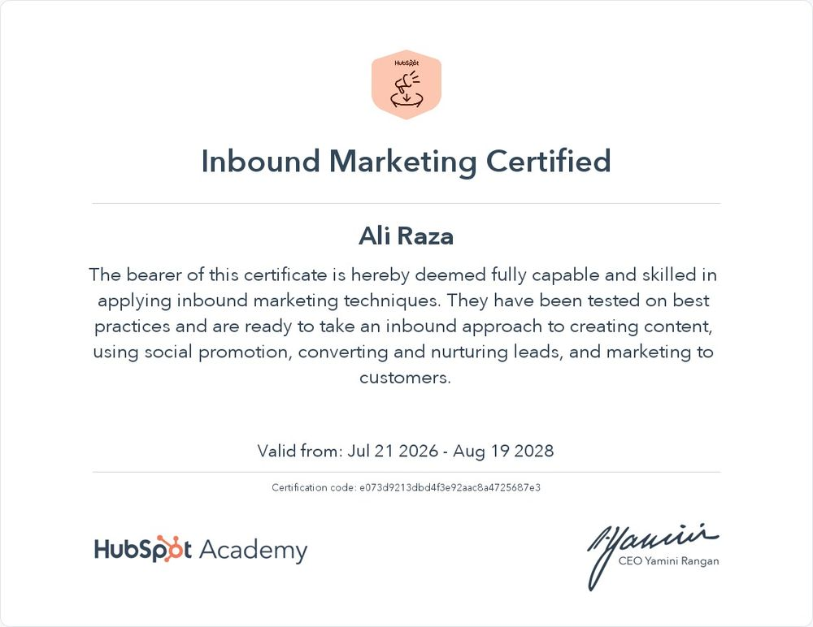
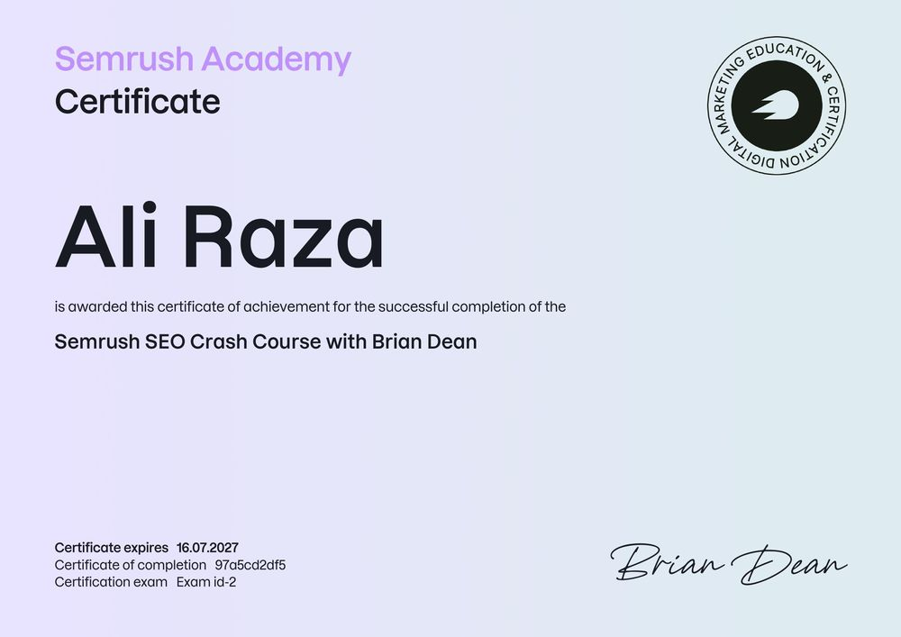
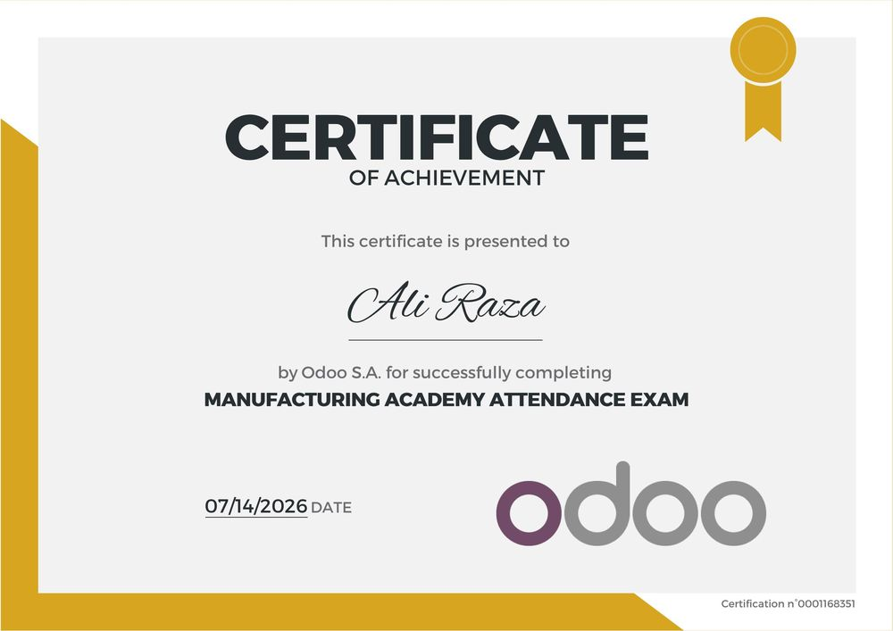
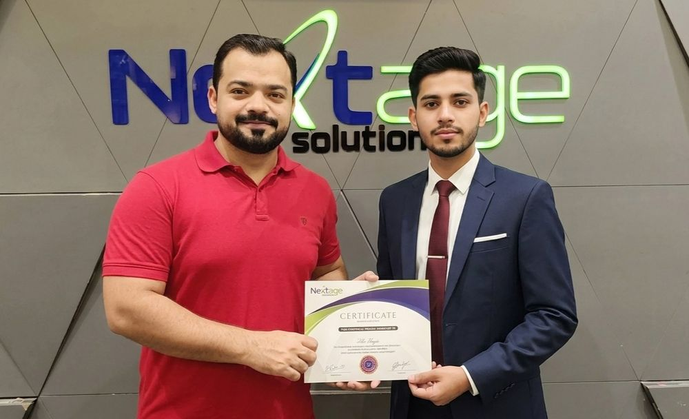

Founder
Ali Raza: SEO Specialist and Founder of Irshadify
I help businesses and agencies grow through SEO, link building and AI search visibility, with clear strategy, ethical methods and honest reporting.
Hi, I'm Ali
I'm an SEO specialist with around 6 years of experience in B2B SEO, link building and outreach. I founded Irshadify, an international digital growth agency, to give businesses and other agencies one reliable partner for SEO, GEO, AEO and website development.
My approach is simple: understand the business first, build a clear strategy, do the work properly and report honestly.

B2B SEO | Link Building | Outreach | GEO and AEO | Website Development
From Hands-On SEO to Building Irshadify
I started my SEO career working inside agencies. Working across different teams and clients taught me what actually moves rankings: strong technical foundations, genuinely useful content and links earned through real outreach, not shortcuts.
In 2023 I began freelancing and helping local businesses improve their search visibility. In 2024 I expanded into full website development, because I kept seeing good SEO held back by slow, poorly built websites. In 2025 I scaled into international link building campaigns for clients in different markets.
Along the way, one pattern became clear. Clients do not want to manage separate SEO, content and development specialists. Agencies want to offer these services but cannot always hire the right people. That is why I built Irshadify: a partnership-based agency where specialists in SEO, development and content work together, and I act as your single point of contact and project manager.
Today, I work with business owners, marketing teams and agencies who want growth that is steady, measurable and built to last.
My Journey
I started my SEO career working inside agencies, learning what actually moves rankings: strong technical foundations, genuinely useful content and links earned through real outreach.
I began freelancing and helping local businesses improve their search visibility.
I expanded into full website development, because good SEO kept being held back by slow, poorly built websites.
I scaled into international link building campaigns for clients in different markets.
I built Irshadify: a partnership-based agency where specialists work together, and I act as your single point of contact and project manager.
My Areas of Expertise
Link Building and Outreach
Guest posting and relationship-based link acquisition on relevant websites.
Website Development
SEO-friendly WordPress, business and lead-generation websites.
My Approach
Strategy before tactics
Every plan starts from your business goals, not a template.
White-hat only
No private blog networks, no paid link schemes, no risky shortcuts.
Quality over volume
A few relevant, trusted links beat hundreds of weak ones.
Honest expectations
I never promise guaranteed rankings, snippets or AI mentions.
Clear reporting
You always know what was done, what changed and what comes next.
Certifications
- Inbound Marketing Certified: HubSpot Academy. Valid from 21 July 2026 to 19 August 2028. Certification code: e073d9213dbd4f3e92aac8a4725687e3
- Semrush SEO Crash Course with Brian Dean: Semrush Academy, certificate of completion. Expires 16 July 2027. Certificate ID: 97a5cd2df5
- GBOB Course, Batch 61: Nextage Solutions, certificate of completion.




I keep learning as search changes, including how AI tools find and recommend brands.
My Toolkit
- Google Search Console
- Google Analytics 4
- a keyword research tool
- a backlink analysis tool
- a site crawler
- ClickUp for project management
- Ahrefs
- Semrush
My Vision for Irshadify
Irshadify is built on a partnership model. Instead of one person trying to do everything, each service is handled by a specialist, while I lead strategy, manage projects and stay accountable to you.
For businesses, that means expert SEO, GEO, AEO and website work with one point of contact.
For agencies, that means a reliable white-label delivery partner that protects your brand and your client relationships.
Mission statement
To help businesses and agencies grow through ethical, transparent and future-ready search marketing.
Frequently Asked Questions
Who is behind Irshadify?
Irshadify was founded by Ali Raza, an SEO specialist focused on B2B SEO, link building and outreach. Ali leads strategy and project management, and works with specialist partners in SEO, development and content.
How much experience does Ali have?
Ali has around 6 years of experience in SEO, including agency roles and independent client work since 2023.
Does Ali personally handle every project?
Ali leads strategy and is your point of contact and project manager. Delivery is handled by specialist partners who work to Irshadify's standards and processes.
What types of clients does Ali work with?
Businesses of different sizes, and agencies that need white-label SEO, GEO and AEO delivery.
Let's Talk About Growing Your Business
Tell me about your goals and your website. I'll review your situation and suggest a clear next step. No pressure, no jargon.
Email: hello@irshadify.com